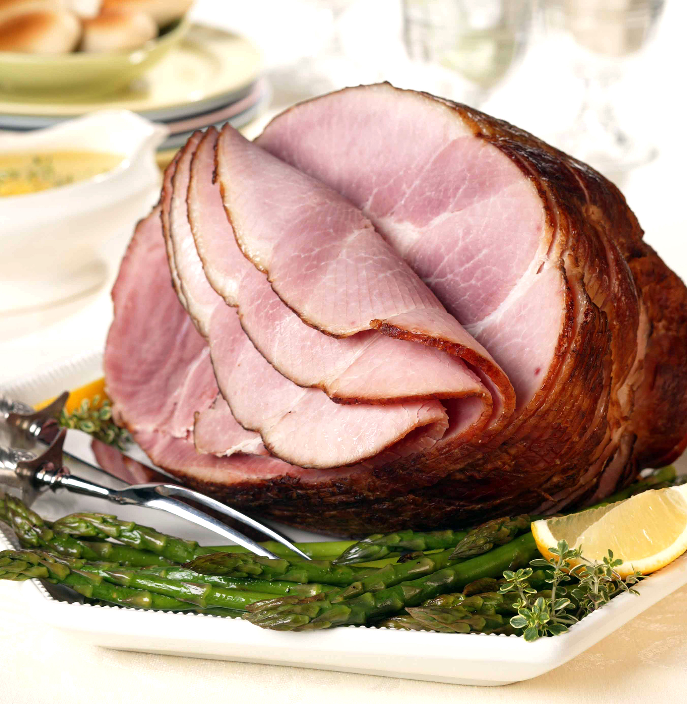
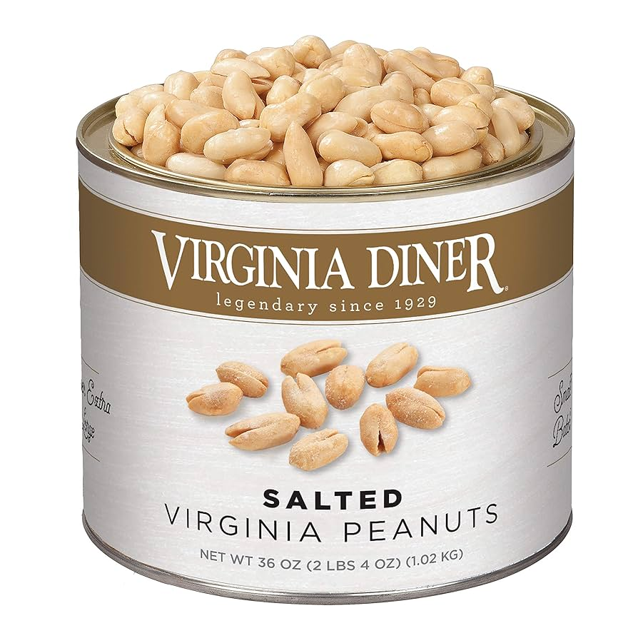
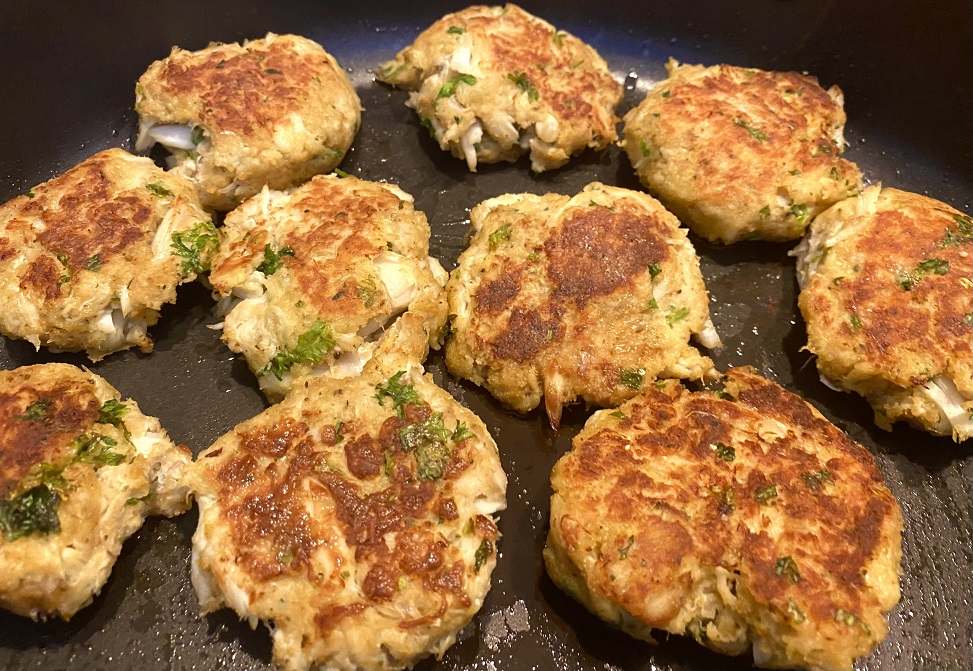

To be honest, I not well-versed with food that is tied to Virginia. However, the people of Virginia does take pride in various peanut products, Chesapeake crab cakes, and Smithfield country ham.
Explore Virginia Foods
Discover the unique flavors of Virginia's cuisines.

Country Ham

Virginia Peanut Butter

Chesapeake Crab Cakes